Jornal Administrativo
Download dos Arquivos
- Abra o gmail da "OPERAÇÃO" e localize a mensagem do dia anterior referente ao expediente.
- Clique na seta e faça o download. 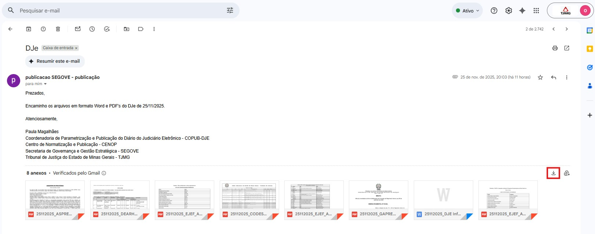
- Salve os arquivos em uma nova pasta com a data do expediente, seguindo o caminho:
Z:\Arquivos PUBLICACOES\Arquivos administrativos\2023\5. Maio\03.05.23
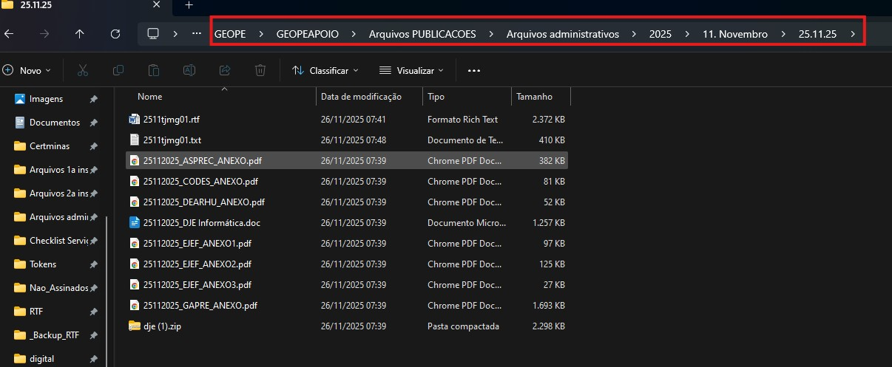
OBSERVAÇÃO: Se o e-mail "Publicação DJe" não for encontrado, contate Paula ou Michele da presidência.
Nomeando os Arquivos
- Navegue até a pasta do dia e abra o arquivo Word (.docx) com o LibreOffice.
- No LibreOffice, vá em Arquivo > Salvar como...
- Em "Tipo", selecione Texto em Formato Rich Text (.rtf). 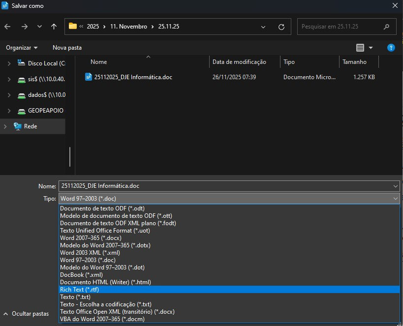
- Nomeie o arquivo como
diamestjmg01(ex: para 25 de novembro, ficaria 2511tjmg01). Salve e feche o documento.
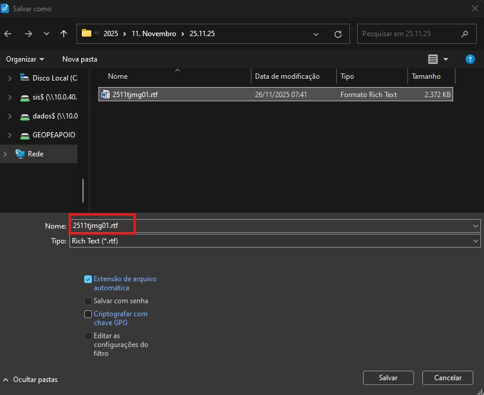
Enviando para o Servidor
- Abra o FileZilla e conecte-se ao site TJ_Arquivos RTF. 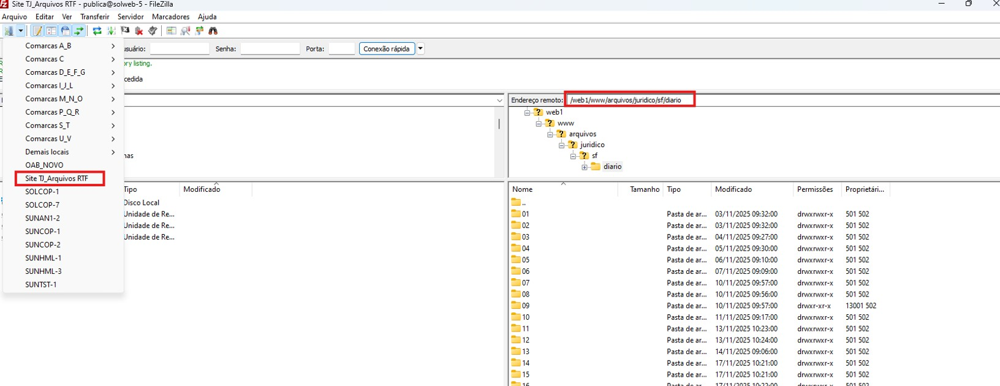
- Navegue até o diretório remoto:
/web1/www/arquivos/juridico/sf/diarioe entre na pastartf.
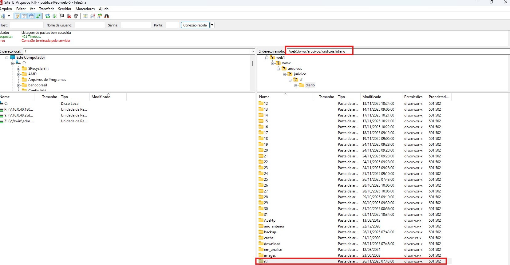
- Transfira o arquivo
.rtfque você acabou de salvar para esta pasta RTF no servidor.
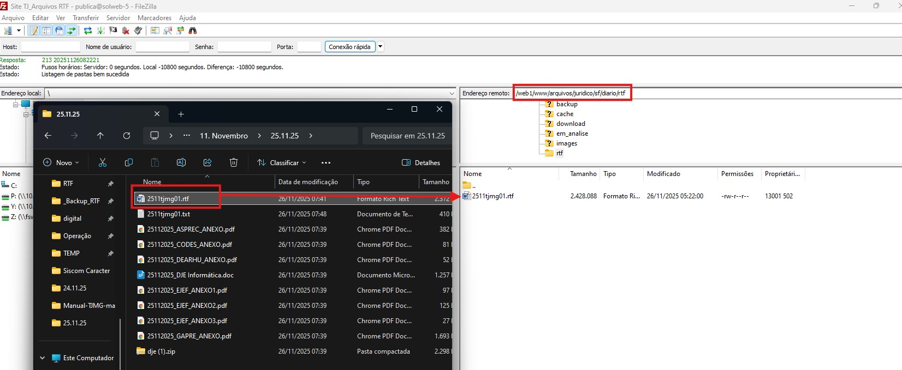
Enviando para o Site
- Acesse o servidor
SOLWEB-5(via PuTTY).
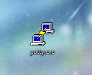
- Clique em "Bastion" e depois em "Load" e "Open" para conectar. 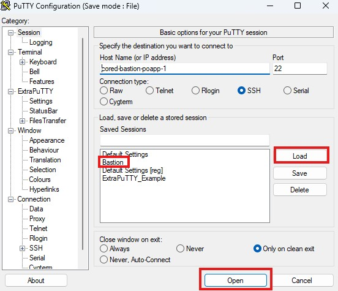
- Ao clicar em 'Open', aparecerá uma tela preta escrita "login as". Nessa hora, digite seu field, no meu caso, é field225. Aperte enter. 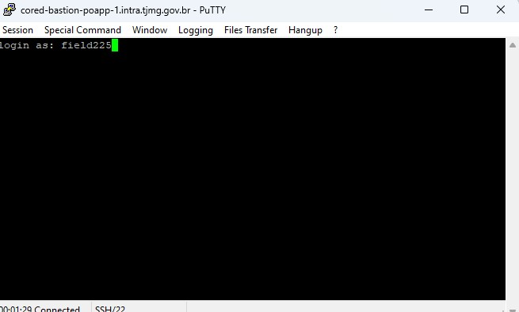
- Coloque o código
ssh publica@solweb-5. Obs.: Não é permitido usar CTRL + V; copie o código e clique com o botão direito do mouse para colar. Aperte enter.
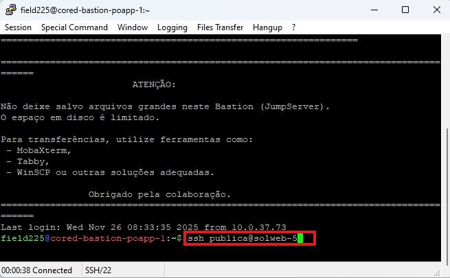
- Digite a senha
imprensae de enter.
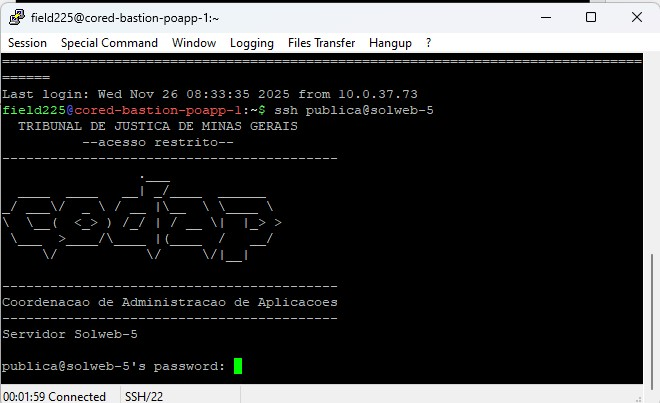
- Coloque o código
cd /home/publica/rotina. Lembando que não é permitido CTRL + V; Use o botão direito do mouse para colar. Apete enter.
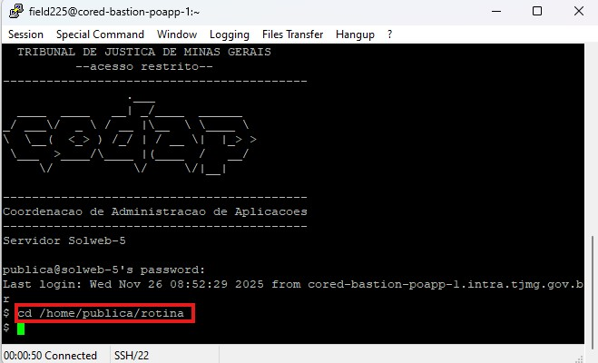
- Coloque o código
./rtf2html.pl –t. Lembando que não é permitido CTRL + V; Use o botão direito do mouse para colar.
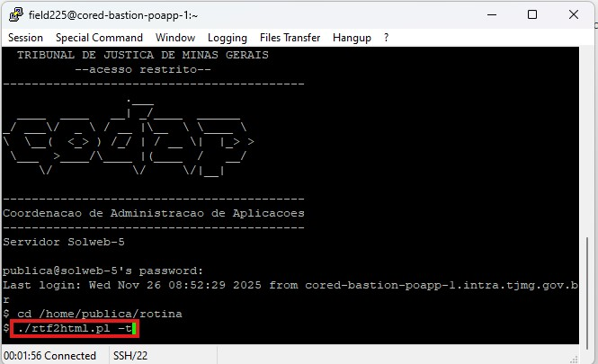
- AGUARDE! Espere até que o cursor com o cifrão (
$) apareça no final.
Verificação Final
- No FileZilla, pressione F5 para atualizar a pasta
rtf. O arquivo que você enviou deve ter desaparecido. - Acesse o site do DJe (Diário Judiciário Eletrônico) e verifique se a publicação foi criada corretamente. 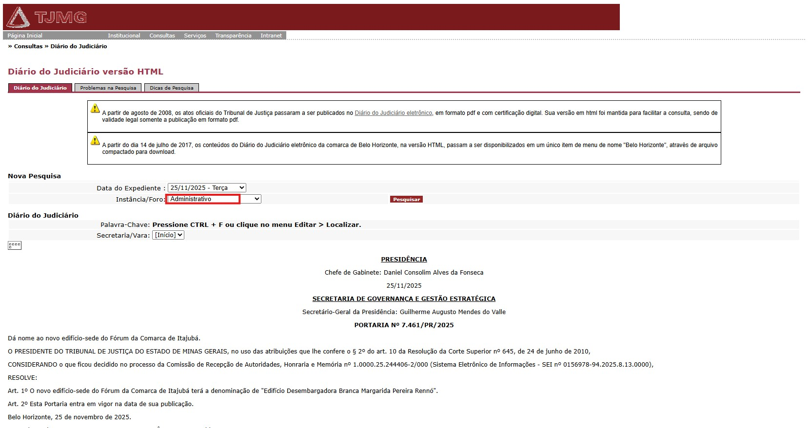
- No servidor, procure pelo arquivo gerado
diamestjmg01.txte copie-o para a pasta do dia correspondente.
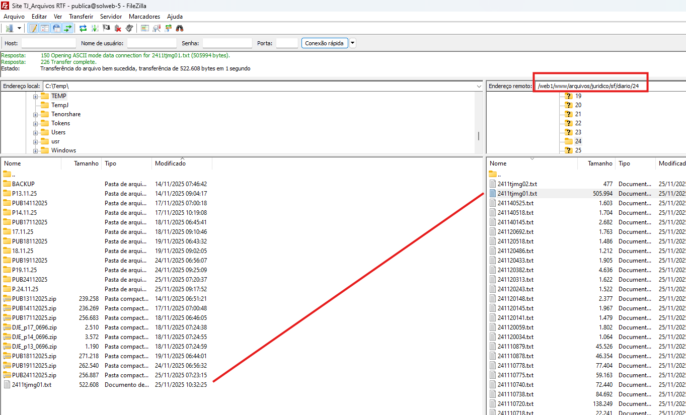
- Sua pasta vai ficar com esses Arquivos 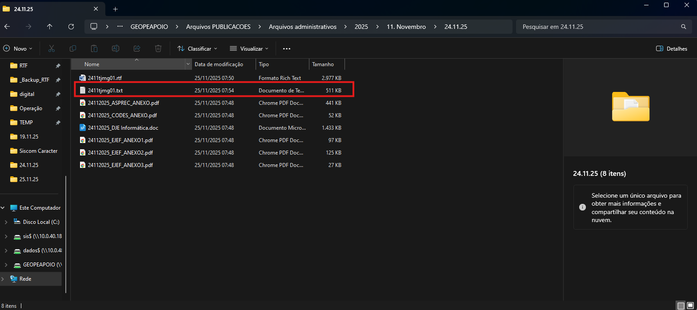
- Abra o arquivo TXT, e vai para o final
ctrl + End. - Conte a quantidade de arquivos PDF que estão na pasta e remova os espaços dos nomes dos PDFs, se houver. 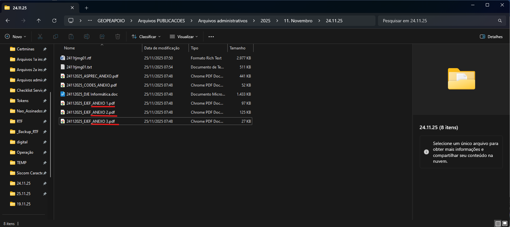
- Cole o código abaixo no final do arquivo TXT. Esse código será adicionado para cada PDF que estiver na pasta. No lugar dos XXX será colocado as informações dos PDFs. 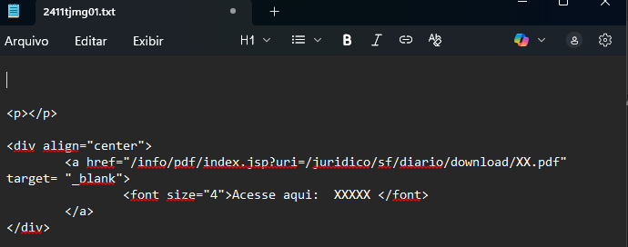
- Copiar o nome dos arquivos e abri-los para copiar os títulos. 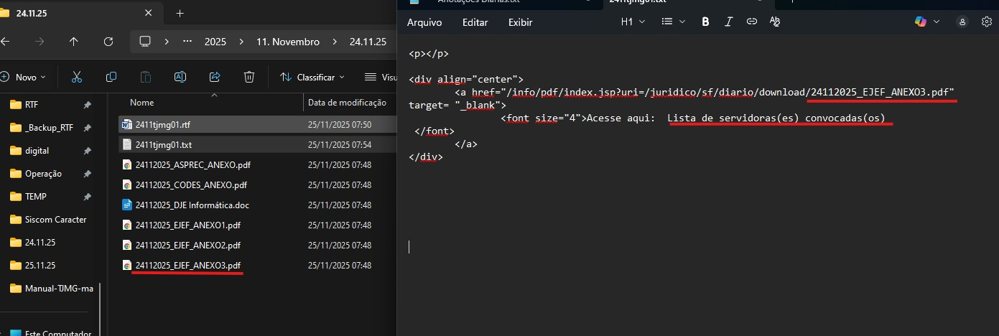
- Após colocar todos os PDFs no TXT, feche o arquivo e salve as alterações.
- Copie esse novo TXT para o servidor. 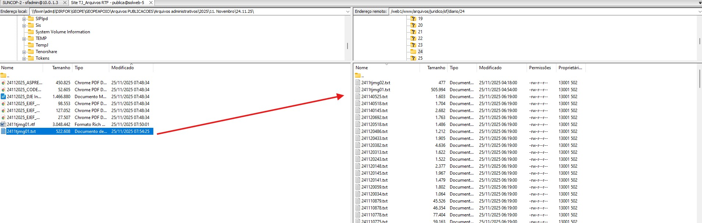 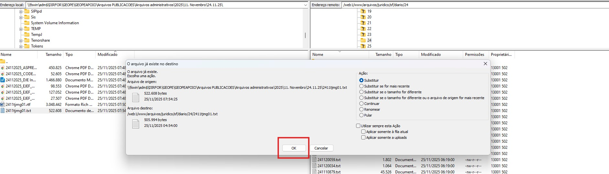
- Vamos enviar todos os arquivos PDFs para a pasta Download no servidor Site TJ_Arquivos RTF 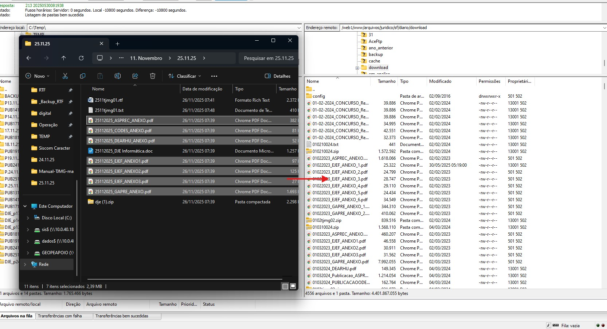
- Abra o site do TJ e vá para o final da página para verificar se os anexos estão abrindo corretamente. 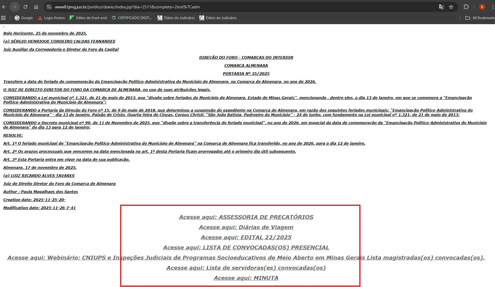
<p></p>
<div align="center">
<a href="/info/pdf/index.jsp?uri=/juridico/sf/diario/download/XX.pdf"
target="_blank">
<font size="4">Acesse aqui: XXXXX </font>
</a>
</div>